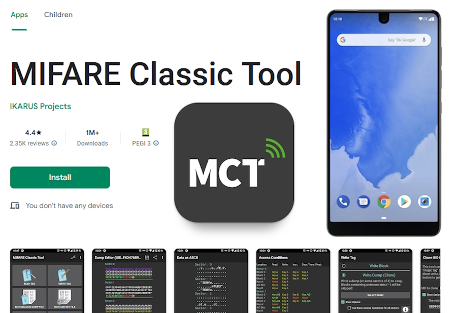
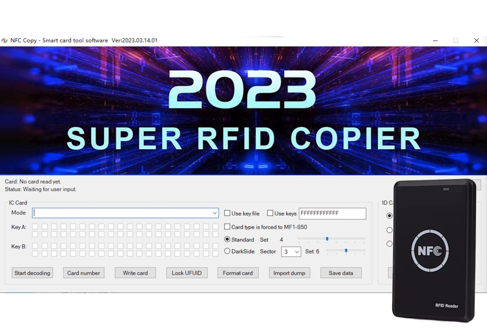

Yet Another Mifare Tool (YAMT)
Works with ACR122U
Yet Another Mifare Tool (YAMT)
Works with PN532 V2.0
Skylanders on Allmiibo
Works with Allmiibo

MIFARE Classic Tool (MCT)
Works with compatible Android Phone

NFC Copy
Works with NS106
wCopy
Works with NS122